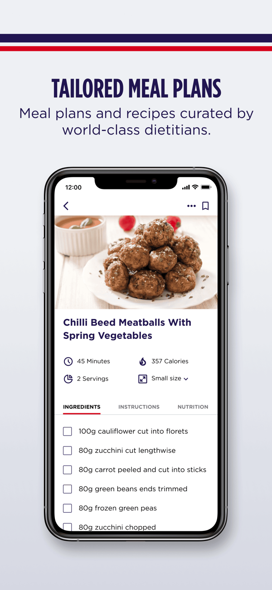
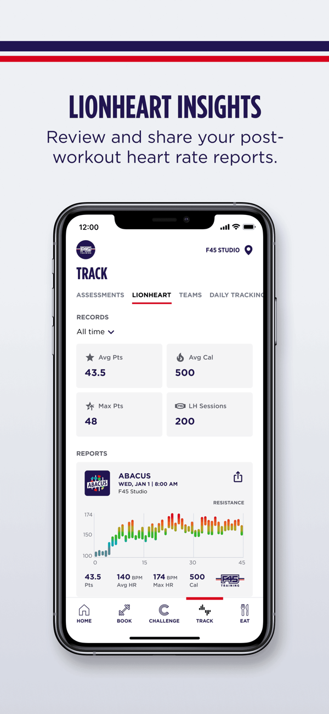
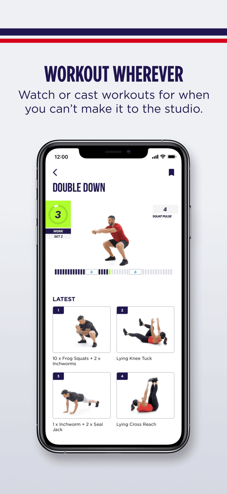

Glavna pot + pod-flowi · klikni gumb pod korakom za celotno besedilo · 19.10.2026
Za Saro in Alenko: to je predlog e-poštne sekvence za trialiste. Pod vsakim korakom je gumb "Poglej načrtovano besedilo" s celim mailom. Vesel bom komentarjev. Povezava je aktivna 7 dni (do 26.10.2026).
dogodek (sprožilec) samodejni mail ročni mail (Alenka) pod-flow / veja
Oznake {{ime}}, {{g:ženska/moški}}, {{osebna vrstica}} se napolnijo ob pošiljanju.
Glavna pot - vse gre po načrtu
1Registracija / aplikacija nameščenaprofil ustvarjen, F45 app na telefonu
Korak 1/3+2h po registracijiAUTO
Korak 1/3: aplikacija je tu - aktiviraj 14 brezplačnih dni
Pozdrav + napoti na aktivacijo preizkusa v aplikaciji (razdelek Urnik).
▸ Poglej načrtovano besedilo
Zadeva: Korak 1/3: aplikacija je tu - aktiviraj 14 brezplačnih dniZdravo {{ime}},
super - aplikacija F45 Training je na tvojem telefonu in tvoj profil je pripravljen. To je prvi korak.
Ostane še eno: aktiviraj svojih 14 brezplačnih dni. To narediš kar v aplikaciji, v razdelku Urnik (Schedule). Tako sam/-a izbereš, kdaj se odštevanje začne - lahko takoj ali čez kakšen dan.
Ko to narediš, ti pošljem naslednji korak. Če kje zatakne, mi samo piši.
Alenka, Team F45
2Aktivacija 14 dnipritisnil start - odštevanje teče
Korak 2/3+1h po aktivacijiAUTO
Korak 2/3: 14 dni teče - rezerviraj prvi trening
Pojasni štetje 14 dni + napoti na rezervacijo v app-u.
▸ Poglej načrtovano besedilo
Zadeva: Korak 2/3: 14 dni teče - rezerviraj prvi treningZdravo {{ime}},
odlično - tvojih 14 brezplačnih dni je zdaj aktivnih in odštevanje teče. Dobro je vedeti: 14 dni se začne šteti od prvega dne prijave, zato ne odlašaj s prvim terminom.
V aplikaciji odpri zavihek Schedule (urnik), izbereš termin, ki ti ustreza, in v par klikih si {{g:prijavljena/prijavljen}}.
Za start priporočam trening za moč (torek, četrtek, nedelja) - tempo je obvladljiv, poudarek na tehniki, idealno, če trenutno nisi v najboljši formi.
Se vidiva kmalu!
Alenka, Team F45
3Prva rezervacijaprijavil se na prvi trening
Korak 3/3takoj ob rezervacijiAUTO
Korak 3/3: vidiva se - kaj te čaka na prvem treningu
Polna logistika (prihod pogosto čez par ur).
▸ Poglej načrtovano besedilo
Zadeva: Korak 3/3: vidiva se - kaj te čaka na prvem treninguZdravo {{ime}},
super, prvi termin je rezerviran - se že veseliva! Da boš takoj {{g:domača/domač}}, na hitro vse, kar je dobro vedeti:
- Kaj prinesti: čisto športno obutev (ki je ne uporabljaš zunaj) in brisačo. Pridi 15 minut prej, da ti trenerji razkažejo studio in ti razložijo, kako bo potekal trening.
- Garderobe in tuši: na voljo so garderobe in ločeni tuši, zasnovani tako, da nudijo popolno zasebnost. Po želji prinesi natikače.
- Okrepčilo: avtomat pri nas nudi proteinske napitke za po treningu in napitke za energijo pred njim.
- Lokacija: Dunajska cesta 167, Poslovna stavba Rotonda - najdeš nas točno vmes med okroglim in pravokotnim delom Rotonde, vhod z dvoriščne strani.
Trenerji te na mestu popeljejo skozi vse - samo pridi {{g:nasmejana/nasmejan}} in {{g:pripravljena/pripravljen}} na zabavo. Se vidiva!
Alenka, Team F45
4Prvi opravljen treningdejansko bil na vadbi
Po 1. treningu+8h po treninguAUTO
Čestitke za prvi trening - kako je bilo?
Prošnja za povratno informacijo + nasvet za regeneracijo + rezerviraj naslednji termin.
▸ Poglej načrtovano besedilo
Zadeva: Čestitke za prvi trening - kako je bilo?Zdravo {{ime}},
bravo za prvi F45 trening! Zanima me, kako se ti je zdel:
- Kaj ti je šlo dobro, kaj je bilo težje?
- So ti trenerji med vadbo posvetili dovolj pozornosti?
- Bi kaj naredili bolje?
Kar odgovori na ta mail - tvoja iskrena povratna informacija nam res pomaga.
Nasvet: največ napreduješ z rednim ritmom (3-4x na teden), zato si kar zdaj v aplikaciji rezerviraj naslednji termin.
Alenka, Team F45
Pripadnost+72h po aktivacijiAUTO
Del globalne družine F45
Skupnost, globalna franšiza (+ FS8), domači trenerji, 300+ članov, druženja čez leto.
▸ Poglej načrtovano besedilo
Zadeva: Del globalne družine F45Zdravo {{ime}},
morda te zanima, kako velika je pravzaprav F45 družina, katere del postajaš tudi ti.
F45 je globalna franšiza z začetki v Avstraliji leta 2011, danes pa šteje več kot 1.300 studiev v več kot 55 državah po svetu. Pod isto okrilje v tujini spada tudi pilates koncept FS8. Povsod te čaka enak preverjen sistem: pameten, vsak dan drugačen program, ki se nenehno razvija.
Tu v Ljubljani smo del te družine od leta 2019. V naši trenerski ekipi so trenerji, ki so z nami od samega začetka, in več kot 300 rednih članov - večina na letnih kartah. To pove veliko o tem, kako se pri nas ljudje počutijo.
Skupnost pa gradimo tudi izven dvorane: med letom se družimo na treningih na prostem, kdaj skočimo v hribe, ob koncu leta pa vedno pripravimo tudi pravo zabavo. Prav ta skupnost je tisto, kar nas dela drugačne.
Alenka, Team F45
Aplikacija+7 dni po 1. treninguAUTO
Kaj vse se ti odklene kot članu
Vrednost članstva. Brez linkov na trgovino - app že ima. Spodaj primeri zaslonov aplikacije.

Prehrana / jedilniki

Srčni utrip (LionHeart)

Treningi od doma
▸ Poglej načrtovano besedilo
Zadeva: Kaj vse se ti odklene kot članuZdravo {{ime}},
med preizkusom aplikacijo uporabljaš za rezervacije - ko pa postaneš {{g:članica/član}}, se ti odklene še veliko več. Majhen vpogled:
- Prehrana: recepti in jedilniki za 3 različne režime, ki jih pripravijo strokovnjaki.
- Članki in vsebine o vadbi, prehrani in dobrem počutju.
- Tvoji rezultati in napredek: spremljanje forme skozi čas in grafi treningov.
- Srčni utrip (LionHeart): po vsakem treningu poročilo (min/max utrip, kalorije, točke).
- Treningi od doma: kadar ne moreš priti v studio.
To je le delček tega, kar dobiš kot član - pravi razlog več, da po preizkusu ostaneš z nami.
Alenka, Team F45
5Zaključek preizkusa - prodajaročno, Alenka, z osebno vrstico
Članarinaokoli 9.-11. dneROČNO
Katera članarina je prava zate
Vodeno priporočilo po algoritmu (frekvenca → fleksibilnost → družinski član).
▸ Poglej načrtovano besedilo
Zadeva: Katera članarina je prava zateZdravo {{ime}},
{{osebna vrstica}}
da ti olajšam izbiro, greva čez dve preprosti vprašanji - hitro vidiva, katera članarina se najbolj prilega tvojemu ritmu.
1) Kolikokrat na teden načrtuješ trening?
- 3× ali več → Redna: neomejeni treningi, kadarkoli ti ustreza.
- 2× na teden → odvisno od urnika (spodaj).
- 1× na teden → Mini: 4 obiski na mesec.
2) Če 2× - so tvoji dnevi stalni ali nihajo?
- Stalni (zmoreš fiksni par dni) → Polovička: izbereš nedelja+sreda ALI ponedeljek+četrtek. Najugodnejša za 2× na teden.
- Nihajo (treniraš, ko ti uspe) → 8 obiskov: katerihkoli 8 treningov na mesec, svoboda glede dni.
Pameten trik: če bi pri nas treniral tudi kdo od najbližjih (družinski član), se splača Družinska - neomejeni obiski, cena na osebo pa primerljiva karti 8 obiskov. Pogosto najboljša kupčija.
Čim dlje se zavežeš (12 / 3 / 1 mesec), ugodnejša je mesečna cena. Vse cene so v aplikaciji pod zavihkom Članarine.
Glede na tvoj ritem med preizkusom imam že predlog zate - pa ga skupaj potrdiva, ko se slišiva ali srečava.
Alenka, Team F45
Zadnji dankonec preizkusa − 24hROČNO
Zadnji dan tvojega preizkusa - greva naprej?
Zadnji poziv: 10 min, izbereva članarino, nadaljuj brez prekinitve.
▸ Poglej načrtovano besedilo
Zadeva: Zadnji dan tvojega preizkusa - greva naprej?Zdravo {{ime}},
{{osebna vrstica}}
tvoj 14-dnevni preizkus se jutri izteče. Če si med treningi {{g:začutila/začutil}}, da ti to ustreza, je zdaj pravi trenutek, da nadaljuješ brez prekinitve ritma - rezultati pridejo takrat, ko vadba postane redna.
Predlagam, da si vzameva 10 minut in izbereva članarino, ki se najbolj prilega tvojemu ritmu in cilju. Vse cene so v aplikaciji pod zavihkom Članarine, se pa z veseljem slišiva ali srečava.
Hvala, da si nas {{g:preizkusila/preizkusil}} - upam, da ostaneš del ekipe!
Alenka, Team F45
Pod-flowi - ko se zgodi nekaj nepredvidljivega
A · Registriran, a NI aktiviral preizkusa
pogoj: 48h po registraciji IN še ni aktivacije
glavna pot obstane na Koraku 1/3 (koraki 2+ so vezani na aktivacijo)
▸ Poglej načrtovano besedilo
Zadeva: Tvojih 14 dni te čaka - aktiviraj, ko ti pašeZdravo {{ime}},
opazila sem, da je aplikacija nameščena, preizkusa pa še nisi {{g:aktivirala/aktiviral}}. Nič za to - 14 brezplačnih dni te čaka in sam/-a izbereš, kdaj zaženeš odštevanje.
Ko ti paše, v aplikaciji (razdelek Urnik) aktiviraj preizkus in rezerviraj prvi termin. Če rabiš pomoč ali imaš vprašanje, mi samo piši - z veseljem pomagam.
Alenka, Team F45
ko aktivira → vrne se na Korak 2/3 in naprej po glavni poti
B · Aktiviral, a še nima opravljenega treninga
pogoj: 48h po aktivaciji IN nobenega opravljenega treninga
namesto tišine med Korakom 2/3 in 3/3
▸ Poglej načrtovano besedilo
Zadeva: Preizkus teče - ujemi naslednji terminZdravo {{ime}},
tvoj 14-dnevni preizkus teče in odštevanje že gre. Da ga kar najbolje izkoristiš, predlagam, da se zdaj prijaviš na prvi termin - v aplikaciji, zavihek Schedule (urnik), par klikov.
Če se je vmes kaj zapletlo (poškodba, službena pot, dopust), mi samo javi. V tem primeru preizkus ustavimo in ti ga nastavimo na kasnejši, boljši čas - da ne izgubiš svoje priložnosti.
Alenka, Team F45
ko opravi prvi trening → Korak 3/3 (če še ni) in nato "Po 1. treningu"
C · Treniral, nato utihnil
pogoj: po 1. treningu nekaj dni brez nove prijave, preizkus še teče
vzporedno z glavno potjo
▸ Poglej načrtovano besedilo
Zadeva: Ne zamudi svojega preizkusaZdravo {{ime}},
nekaj dni te ni bilo na treningu - je vse v redu?
Tvoj brezplačni preizkus še traja, a se kmalu izteče. Če se je vmes kaj zapletlo, mi javi in skupaj najdeva termin, ki ti ustreza.
Alenka, Team F45
ko spet rezervira/trenira → nadaljuje glavno pot
P · Pavza / reset preizkusa
pogoj: član javi oviro (poškodba, služba, dopust)
na zahtevo - sproži Alenka ročno, ni nov mail
Alenka ustavi preizkus in nastavi nov začetni datum. Sekvenca se zamakne na nov datum (vsi sprožilci se preračunajo).
ob novem datumu se preizkus "znova zažene" - flow teče od ustrezne točke
Pravila, ki držijo celoto
Kako se flow obnaša
enkratnost vsak korak se pošlje največ enkrat na osebo.
event-driven koraki 2+ se sprožijo šele ob svojem dogodku - ne po koledarju. Kdor ne aktivira, ne dobi korakov 2+; ujame ga Varianta A.
izključnost vej variante se sprožijo le dokler primarni dogodek manjka; ko se zgodi, oseba skoči nazaj na glavno pot.
ročno Članarina in Zadnji dan pošlje Alenka (osebna vrstica).
app-first nikjer ne linkamo na spletni urnik; usmeritve so z besedami v aplikacijo.
stikalo dokler je sistem v testnem načinu, scheduler pripravi, a nič ne pošlje do potrditve.
F45 Training Bežigrad · interni predlog · povezava poteče 26.10.2026 · slike: posnetki uradne aplikacije F45 Training (App Store)